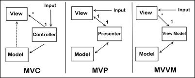

MVC, MVP, and MVVM are three popular design patterns in software development.
All these design patterns by and large help in developing applications that are loosely combined, easy to test and maintain. All discussion about the pattern is made in context of Android as a platform.

Model means data that is required to display in the view. Model represents(表示) a collection of classes that describes(描述) the business logic (business model and the data model). It also defines the business rules for data means as how the data can be changed and manipulated(操作).
The View represents UI components like XML, HTML etc. View displays the data that is received(接收) from the controller as the outcome(结果). In MVC pattern View monitors(监视) the model for any state change and displays updated model. Model and View interact(交互) with each other using the Observer pattern.
The Controller is responsible(负责) to process incoming requests. It processes the user’s data through the Model and passing back the results to View. It normally(通常) acts(充当) as a mediator(中介) between the View and the Model.
There is a many-to-one relationship between the Controller and the View. That’s because a single controller may select different views to be rendered based on the operation being executed(执行).
Note the one way arrow from Controller to View. This is because the View doesn’t have any knowledge(可知性) of or reference(引用) to the controller.
The Controller does pass back the Model, so there is knowledge between the View and the expected Model being passed into it, but not the Controller serving(提供) it up.
The MVP pattern is similar to the MVC pattern. It is derived from MVC pattern, wherein the controller is replaced by the presenter.
The Model represents a set of classes that describes the business logic and data. It also defines business rules for data means how the data can be changed and manipulated.
View is a component which is directly(直接) interacts with user like XML, Activity, fragments. It does not contain(包含) any logic implemented(实现).
The Presenter receives the input from users via(通过) View, then(然后) process the user’s data with the help of Model and passing the results back to the View. Presenter communicates(连接通信) with(和) view through(通过) interface. Interface is defined in presenter class, to which it pass the required data(它传递所需的数据). Activity(fragment) or any other view component implement this interface and renders(呈现) the data in a way they want.
The input begins with the View, not the Presenter.
There is a one-to-one mapping between the View and the associated(相应的) Presenter.
The View holds(保存) a reference to the Presenter. The Presenter is also(同样) reacting(响应) to events being triggered from the View, so its aware(察觉) of the View its associated(有关联) with.
The Presenter updates the View based on the requested actions it performs(行使) on the Model, but the View is not Model aware.
In the MVP design pattern, the presenter manipulates(操作) the model and also updates the view. In MVP View and Presenter are completely(完全彻底) decoupled(解耦) from each other’s and communicate to each other’s by an interface. Because if decoupling mocking of the view is easier and unit testing of applications that leverage(杠杆作用,利用) the MVP design pattern over the MVC design pattern are much easier.
MVVM pattern supports two-way data binding between View and View-Model. This allows automatic propagation(传播) of changes, inside(内部) the state of View-Model to the View. Generally, the View-Model utilizes(采用) the observer pattern to inform(告知) changes in the View-Model to the Model.
It is responsible(负责) for exposing(暴露) methods, commands, and other properties that help to maintain(维持) the state of the view, manipulate the model as the result of actions on the view, and trigger events in the view itself. View has a reference to View-Model but View-Model has no information about the View. There is many-to-one relationship between View and View-Model means many Views can be mapped to one View-Model. It is completely(全然) independent(独立) of Views.
The input begins with the View, not the View Model.
the View holds a reference to the View Model, the View Model has no information about the View.
the View has no idea about the Model in the MVVM pattern. This is because, as far as the View knows, its “Model” IS the View Model (hence its name). Because of how data-binding and other features like commanding work in WPF and Silverlight, there is rich communication(通信) between the View and View Model, isolating(隔离) the View from having to know anything about what’s really happening behind the scenes(隔离视图，不必了解幕后真实情况。).